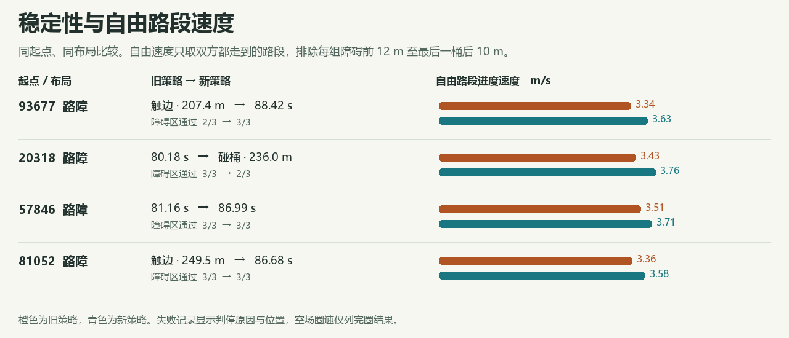
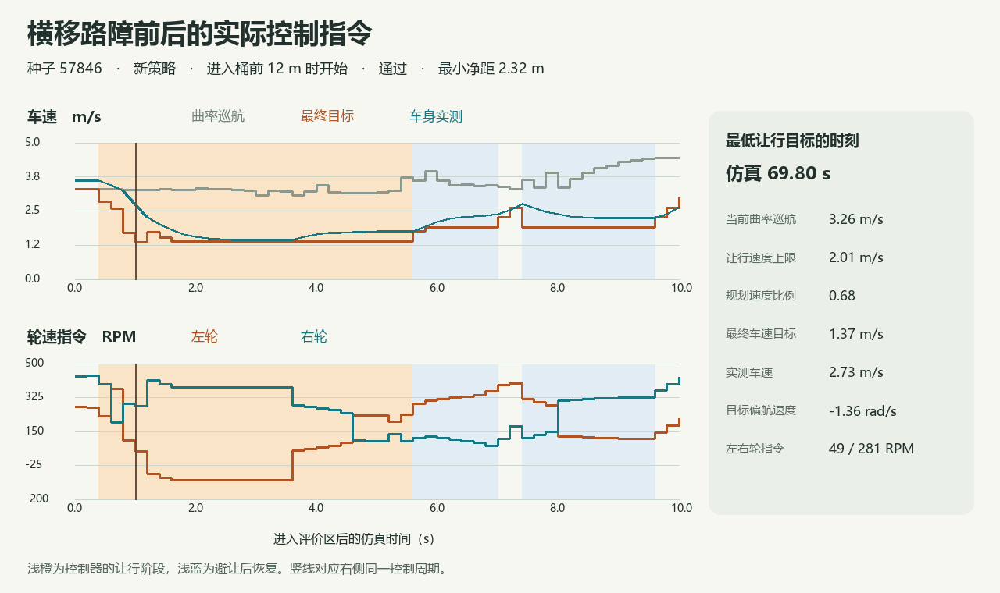

A4 驾驶考核
同起点无新增路障圈速 · 原始指标与指令样本 · 冻结参数
录像来自种子 93677。车每 0.2 秒更新一次。A4 从前视画面估计车线与桶的位置，规划器比较十种横向目标与三档速度。它根据桶的运动、车身来得及横移的距离、路边剩余空间和上次指令选出动作，再将预瞄点和实测偏航换成左右轮目标 RPM。候选动作、代价公式和电机转换由人编写；这次用 Unity 练习和复验，从预先给定的参数组合中选定弯速、收油与恢复设置。裁判单独使用整图计分。
加设路障时，旧策略完圈 2/4，新策略 3/4。

分区秒数用于描述驾驶动作。遇到横移桶的让行耗时不进入速度评分。部分路线的共同区间速度不能替代完圈成绩。障碍出现时的动作
实线为实测车速，虚线为控制器目标。两次试车按进入同一评价区的时刻对齐。三角标出裁判离线估算的首次冲突：未来 3 s 内若保持当前航向、车速与桶速，车身到桶的预计净距小于 0.25 m。这个估计只用来标注轨迹。
旧策略 已通过 · 净距 1.52 m新策略 已通过 · 净距 1.18 m
该区记录到 24 次让行指令、8 次恢复指令。让行目标最低 1.40 m/s，同次曲率巡航值 4.14 m/s。
旧策略 已通过 · 净距 1.54 m新策略 已通过 · 净距 1.13 m
该区记录到 34 次让行指令、24 次恢复指令。让行目标最低 1.40 m/s，同次曲率巡航值 4.12 m/s。
旧策略 区内终止 · 净距 1.51 m新策略 已通过 · 净距 2.10 m
该区记录到 23 次让行指令、7 次恢复指令。让行目标最低 1.40 m/s，同次曲率巡航值 4.23 m/s。
旧策略 已通过 · 净距 1.06 m新策略 已通过 · 净距 0.96 m
该区记录到 25 次让行指令、7 次恢复指令。让行目标最低 1.40 m/s，同次曲率巡航值 4.09 m/s。
旧策略 已通过 · 净距 1.47 m新策略 已通过 · 净距 1.22 m
该区记录到 29 次让行指令、29 次恢复指令。让行目标最低 1.40 m/s，同次曲率巡航值 4.16 m/s。
旧策略 已通过 · 净距 0.54 m新策略 区内终止 · 净距 -0.01 m
该区记录到 21 次让行指令、0 次恢复指令。让行目标最低 1.40 m/s，同次曲率巡航值 4.14 m/s。
旧策略 已通过 · 净距 1.60 m新策略 已通过 · 净距 1.49 m
该区记录到 25 次让行指令、17 次恢复指令。让行目标最低 1.40 m/s，同次曲率巡航值 3.18 m/s。
旧策略 已通过 · 净距 0.35 m新策略 已通过 · 净距 0.31 m
该区记录到 34 次让行指令、9 次恢复指令。让行目标最低 1.26 m/s，同次曲率巡航值 1.26 m/s。
旧策略 已通过 · 净距 0.09 m新策略 已通过 · 净距 2.32 m
该区记录到 26 次让行指令、18 次恢复指令。让行目标最低 1.37 m/s，同次曲率巡航值 3.26 m/s。
旧策略 已通过 · 净距 1.40 m新策略 已通过 · 净距 1.37 m
该区记录到 24 次让行指令、17 次恢复指令。让行目标最低 1.40 m/s，同次曲率巡航值 4.08 m/s。
旧策略 已通过 · 净距 1.40 m新策略 已通过 · 净距 1.15 m
该区记录到 34 次让行指令、11 次恢复指令。让行目标最低 1.40 m/s，同次曲率巡航值 4.08 m/s。
旧策略 已通过 · 净距 1.51 m新策略 已通过 · 净距 2.37 m
该区记录到 23 次让行指令、7 次恢复指令。让行目标最低 1.40 m/s，同次曲率巡航值 3.50 m/s。
新策略逐次发令
练习
展开练习全部 12 趟记录
资格复验
展开资格复验全部 6 趟记录
一次横移路障的完整发令过程

车身有没有少摇晃
共同跑到的自由路段中，实测偏航角加速度 RMS 为 0.23 rad/s² → 0.15 rad/s²。一秒内快速回摆为 0.28 次/100 m → 0.00 次/100 m。回摆只计偏航越过 ±0.08 rad/s 后又在一秒内反向的事件，排除车速小于 1 m/s 的样本。两项都受车速与弯形影响。
单独放宽避让限速，会怎样？
保留相同感知、路径评分与轮速转换。同种子再跑，只改通过与恢复的速度上限。每列列出横移桶最小净距和通过时间。
这四个布局在选参后作机理对照。对照原始读数
20318 为什么留下来
冻结策略在 68.6 秒时看到桶在左前 6.5 m，估计桶在向左移。到 69.8 秒，桶已在左前 3.6 m，估计改为向右移。此时车才选右绕，最终在 236.0 m 碰桶。将所有桶的未来位置都向两侧扩展，另一次试验反而在 49.3 m 的静态桶前触边。这项改动未入选。实验记录 · 试验协议